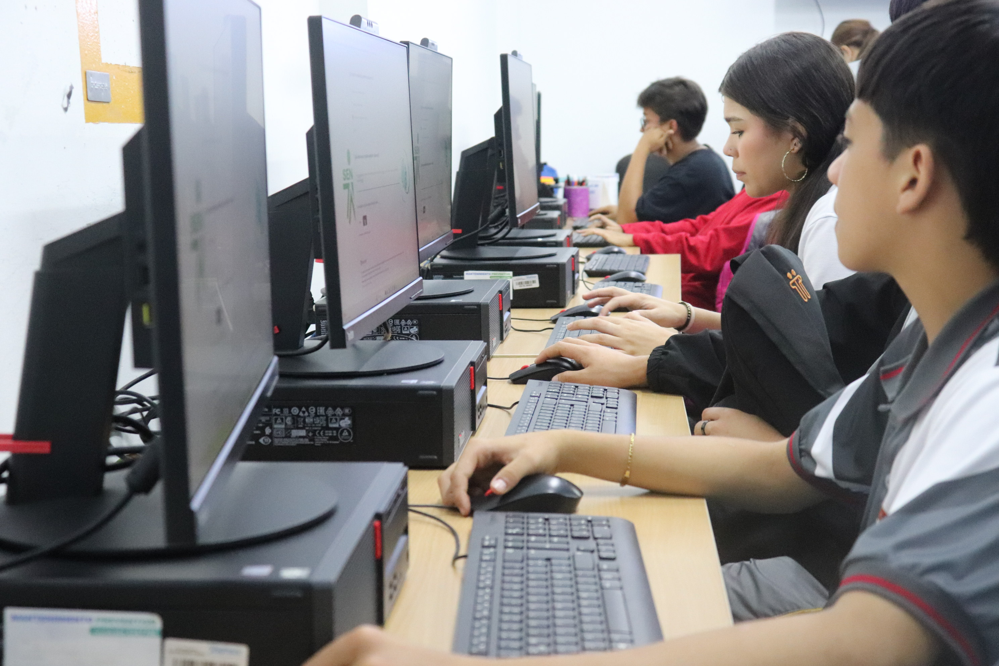

Tics e inteligencia artificial
En la línea de TICS e Inteligencia Artificial de la Tecnoacademia, la robótica y la IA se articulan para dar vida a dispositivos y sistemas automatizados que responden a necesidades reales.
Mediante el uso de sensores, actuadores, microcontroladores y circuitos, los aprendices adquieren habilidades para diseñar, ensamblar y programar prototipos funcionales, integrando conocimientos de mecánica, programación y control.
Esta área impulsa la creatividad y la capacidad de resolver problemas, preparando a los participantes para un entorno tecnológico en constante evolución.
